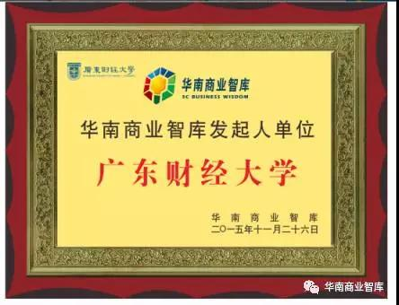
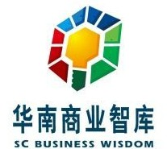

广东财经大学“华南商业智库”入选省级重点智库
为贯彻落实《关于加强广东省新型智库建设的实施意见》（粤办发〔2015〕12号）精神，省委宣传部近期组织了省重点智库评选工作。经专家评审、省委宣传部部务会议审核及公示等环节，从申报的84家智库中确定了15家智库为省重点智库。广东财经大学“华南商业智库”入选。9月28日，省委宣传部组织召开了省重点智库工作座谈会，会上广东财经大学流通经济研究所所长王先庆教授代表“华南商业智库”就智库建设的进展、建设目标和下一步工作重点作了发言。
“华南商业智库”2015年由我校联合广东省商业经济学会、广州商业总会等五家单位发起成立，以“全国流通看广东，广东流通看全球”为出发点，以“聚集华南商业智慧，服务华南商业实践，引领华南商业创新”为使命，以“打造华南商界的理论研究中心和决策咨询中心”为目的，研究广东现代商贸流通的变革发展与热点难点问题，旨在努力建成国内一流的新型特色商业智库，打造影响华南和辐射国内外的商贸流通领域专家团队，建立具有岭南风格的商贸流通学派。
华南商业智库成员目前已经超过400余名，由一批来自高校、商会、政府部门、研究机构和商贸企业中长期从事商贸流通实践和研究的专业人士组成，多数是来自华南地区知名商贸流通企业的负责人和中青年高管，涉及现代物流、电子商务、商业零售、商业地产、专业市场、城市商圈、会展经济、市场营销、餐饮旅游等商贸流通的各个领域，他们在华南乃至全国的商贸流通领域具有较高的知名度或权威性，且大多具有从事企业或政府实际工作及决策研究的双重经验，具有相当强的实战能力，对商业领域的变化趋势和最新前沿十分熟悉。其中，骨干成员组成“华南商业50人论坛”，为智库的核心团队专家。
目前，华南商业智库除了为政府和企业提供决策咨询服务外，还在课题研究、学术交流、图书出版等取得了一定成绩。下一步，智库专家将围绕“纪念改革开放四十周年广东商贸流通变革与创新发展”系列学术活动为突破口，以“一带一路背景下粤港澳大湾区国际商贸枢纽建设”为研究重点，聚焦一带一路与广东现代流通体系建设、广东自由贸易区与内外贸市场体系建设、广州国际商贸中心与国际贸易枢纽建设、互联网背景下智慧物流与广东城市物流配送体系建设、电子商务集聚发展与新兴业态创新问题研究、广东国际采购与专业市场如何转型升级。
